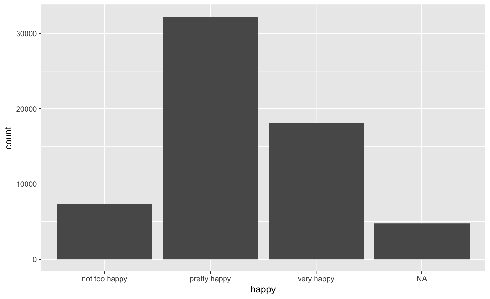
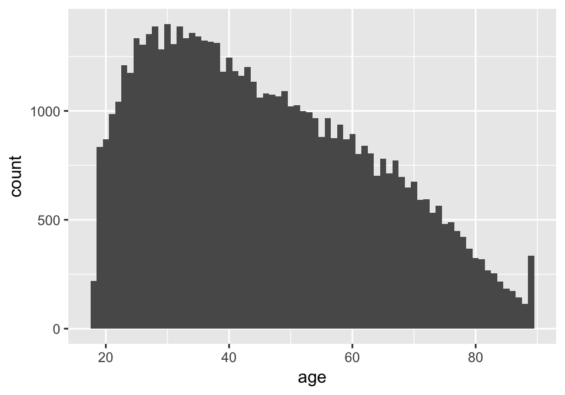
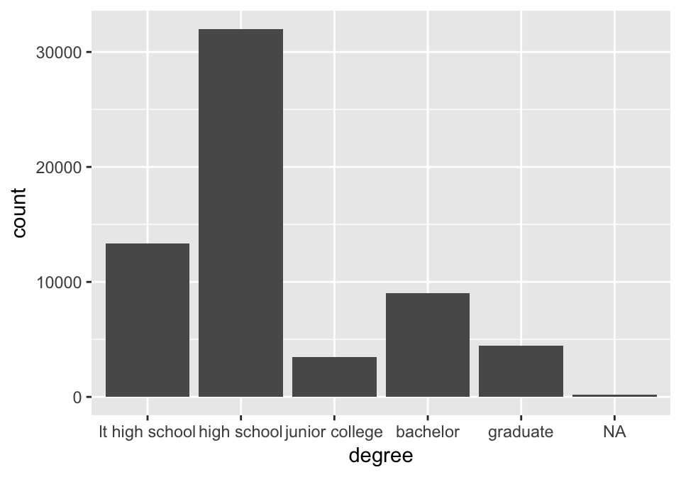

The Happy data from GSS
The General Social Survey (GSS) has been run by NORC every other year since 1972 to keep track of current opinions across the United States.
An excerpt of the GSS data called happy is available from the classdata package:
devtools::install_github("heike/classdata")
You can find a codebook with explanations for each of the variables at https://gssdataexplorer.norc.org/
A first look
library(tidyverse)
library(classdata)
data("happy", package="classdata")
happy %>% str()
## 'data.frame': 62466 obs. of 11 variables:
## $ happy : Factor w/ 3 levels "not too happy",..: 1 1 2 1 2 2 1 1 2 2 ...
## $ year : int 1972 1972 1972 1972 1972 1972 1972 1972 1972 1972 ...
## $ age : num 23 70 48 27 61 26 28 27 21 30 ...
## $ sex : Factor w/ 2 levels "female","male": 1 2 1 1 1 2 2 2 1 1 ...
## $ marital : Factor w/ 5 levels "never married",..: 1 3 3 3 3 1 4 1 1 3 ...
## $ degree : Factor w/ 5 levels "lt high school",..: 4 1 2 4 2 2 2 4 2 2 ...
## $ finrela : Factor w/ 5 levels "far below average",..: 3 4 3 3 4 4 4 3 3 2 ...
## $ health : Factor w/ 4 levels "poor","fair",..: 3 2 4 3 3 3 4 3 4 2 ...
## $ polviews: Factor w/ 7 levels "extrmly conservative",..: NA NA NA NA NA NA NA NA NA NA ...
## $ partyid : Factor w/ 8 levels "strong republican",..: 5 6 4 6 7 5 5 5 7 7 ...
## $ wtssall : num 0.445 0.889 0.889 0.889 0.889 ...
The variable HAPPY
happy %>%
ggplot(aes(x = happy)) + geom_bar()

The variable age
happy %>% ggplot(aes(x = age)) + geom_histogram(binwidth=1)

The variable degree
happy %>% ggplot(aes(x = degree)) + geom_bar()

Summarising Happiness
Use scores for happy factor to summarise overall happiness level, i.e. not too happy = 1, pretty happy = 2, and very happy = 3
happy %>% summarise(
m.happy = mean(as.numeric(happy), na.rm=TRUE)
)
## m.happy
## 1 2.186969
happy %>% group_by(sex) %>% summarise(
m.happy = mean(as.numeric(happy), na.rm=TRUE)
)
## # A tibble: 2 x 2
## sex m.happy
## <fct> <dbl>
## 1 female 2.19
## 2 male 2.18
Your turn: group_by and summarise

For this your turn use the happy data from the classdata package
- How do average happiness levels change over age?
- Are Republicans or Democrats happier? Compare average happiness levels over
partyid.
- How are financial relations associated with average happiness levels? Is this association different for men and women?
- Find a plot that shows the differences for each one of the summaries.
Your turn: asking questions
For this your turn use the happy data from the classdata package
- Investigate what other variable(s) might be associated with happiness. Plot it.
- Submit your code in Canvas for one point of extra credit.
Helper functions (1)
n() provides the number of rows of a subset:
happy %>% group_by(sex) %>% summarise(n = n())
## # A tibble: 2 x 2
## sex n
## <fct> <int>
## 1 female 34904
## 2 male 27562
tally() is a combination of summarise and n
happy %>% group_by(sex) %>% tally()
## # A tibble: 2 x 2
## sex n
## <fct> <int>
## 1 female 34904
## 2 male 27562
Helper functions (2)
count() is a further shortcut of group_by and tally:
happy %>% count(sex, degree)
## # A tibble: 12 x 3
## sex degree n
## <fct> <fct> <int>
## 1 female lt high school 7500
## 2 female high school 18419
## 3 female junior college 2047
## 4 female bachelor 4731
## 5 female graduate 2112
## 6 female <NA> 95
## 7 male lt high school 5825
## 8 male high school 13598
## 9 male junior college 1425
## 10 male bachelor 4279
## 11 male graduate 2357
## 12 male <NA> 78